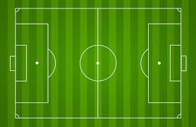

Football, also known as soccer in some countries, is governed by a set of rules known as the Laws of the Game. These rules are maintained by the International Football Association Board (IFAB) and are designed to ensure fair play and safety for all players.
A football match is played on a rectangular field, known as the pitch, which is 100-110 meters long and 64-75 meters wide. The field is divided into two halves, with a center circle and a center line.
At each end of the pitch, there are two goalposts, 7.32 meters apart, with a net behind them. The goals are 2.44 meters high.
Common fouls include tripping, pushing, or handling the ball deliberately. When a foul occurs, the referee may award a direct or indirect free kick, or a penalty kick if it happens in the penalty box.
These restart the game when the ball goes out of play. The team that didn't touch the ball last gets possession.
Throw-ins are awarded when the ball goes out over the sideline, goal kicks when it goes out over the goal line last touched by an attacker, and corner kicks when it goes out last touched by a defender.
Understanding the rules of football is essential for players, coaches, and fans alike. They ensure that the game is played fairly and safely, allowing everyone to enjoy the beautiful game. Whether you're playing in a local park or watching a professional match, knowing the rules enhances your appreciation of football.
For more detailed information, you can refer to the official Laws of the Game published by IFAB:IFAB Laws of the Game